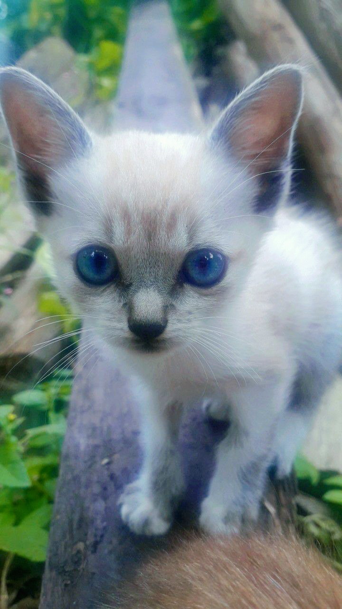

Os gatos não são o melhor amigo do homem, mais sabemos que os gatos são atenciosos, carinhosos, inteliegentes e únicos. Por isso a gente irá falar algumas curiosidades sobre esses gatinhos.
1- Estima-se que exista mais de 600 milhões de gatos no mundo incluindo os gatos de rua, gatos domésticos e os de abrigos.
2- Algumas das comidas que nunca devem ser dadas a um gato são: cebola, alho, tomate verde, batata crua, chocolate, uvas e passas.
3- Um gato tem 240 ossos no seu corpo, dependendo do tamanho da cauda. Já um humano tem apenas 206.
4- Um gato pode saltar até 5 vezes a sua altura num único salto.
5- A raça mais popular de gatos é a persa, seguida pela Maine Coon e Siamesa.
6- A temperatura normal de um gato ronda os 38º e 39º C. Um gato está doente se a temperatura estiver abaixo de 37º e acima de 39º C.
7- A piscada lenta é o equivalente a um sorriso para os gatos
8- O cérebro de um gato é mais parecido com o de um humano do que com o de um cachorro
9- Gato preto significa "sorte" no Reino Unido e na Austrália
10- A audição dos gatos é ainda melhor do que a canina
11- Segundo a OMS, o Brasil possui mais de 30 milhões de animais abandonados.